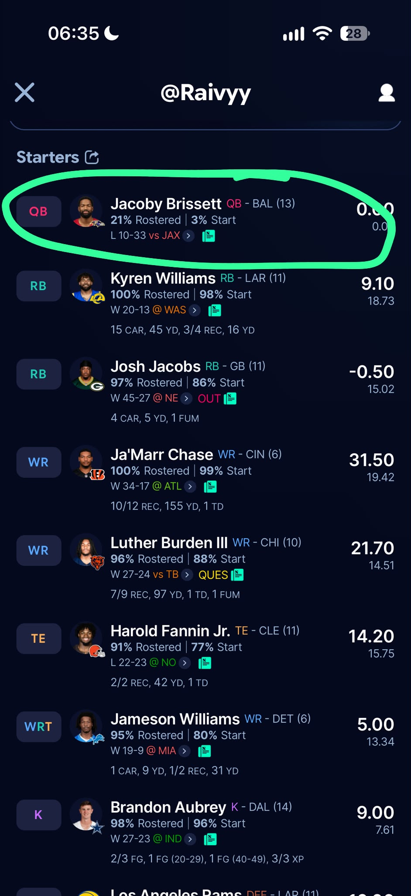

Woche 9 · Redraft Empire
Flensburg Suns Max
- Verstoß
- Jacoby Brissett (QB) stand im Starting Lineup, obwohl nach seinem Trade bekannt war, dass er nicht spielen wird
- Regel
- Einzelfall, entschieden von der Führung der Liga (Abschnitt 12)
- Konsequenz
- 1. Verwarnung

Beweis ansehen